IAA Teardown · Water Match ASMR
把广告
放进解题里前 100 关的关卡语法、广告门与留存代价
这是一款把“空瓶”做成广告位的排序游戏。它的难度不只看颜色多少，还要看玩家在首屏有没有一个不用看广告就能拿到的周转位。在一组 7 关的人工读数里，免费空瓶 0–1 的关卡完成率落在 15.9%–58.7%；免费空瓶 2–3 的关卡落在 93.8%–96.5%。广告空瓶的数量并没有改变这条分界。
研究边界：我没有这款产品的后台，也没有真实 eCPM、留存与广告填充数据。文中的运营指标来自题目提供的数据；试玩感受与截图来自测试包；收入测算是标注过的示意模型。不把测试包的“无限广告”当作线上规则。
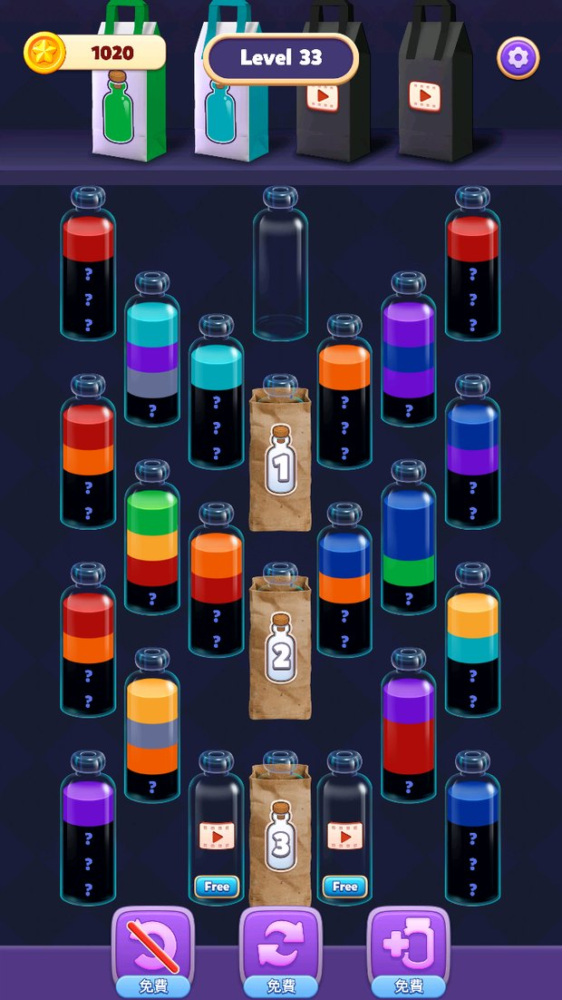
摘要：广告没有变多，
它只是站到了第一步上
这份拆解不讨论“IAA 好不好”，只讨论广告位放在哪里，才会同时保住解题体验和广告收入。
关卡的核心资源是可周转位，不是颜色数量。
空瓶让玩家能在倒错后把颜色暂存、把隐藏层分批揭开。没有空瓶，第一步就从“选择”变成“下注”。
免费空瓶 0–1 是断崖区，2–3 是安全区。
7 关人工读数里，免费空瓶 0–1 的 4 关完成率 15.9%–58.7%；免费空瓶 2–3 的 3 关完成率 93.8%–96.5%。广告空瓶大多相同，差别在第一个周转位要不要先看广告。
“送了一个空瓶”不等于给了缓冲。
三种假缓冲：没有空瓶；有空瓶但第一步就把它占死；看起来有空位、实际被固定底色锁死。L13、L33、L49、L80 分别踩中三种。
把广告放在唯一周转位上，激励视频就变成了过路费。
IAA 的正循环是“先能玩，再卖更从容”；反循环是“先看广告，才配玩”。前者的广告是加分项，后者会把无结果、退出和流失记到下一关的账上。
游戏真正的四步法没有教。
找空瓶、拆四份链、三份链隔一层、保底色——这是玩家自己悟出来的读盘方式。前 10 关就出现广告墙，而策略教学还没开始，顺序反了。
如果只记一句话：这款游戏的问题不是广告太多，而是广告站在了解题的第一步上。
一款把空瓶做成广告位的
IAA 排序游戏
先看清它卖的是什么，再谈关卡。Water Match ASMR 的收入不来自内购，而来自玩家愿意为“多一个周转位”看完一段视频。
Water Match ASMR 是一款竖屏排序解谜：点一个瓶子，再点另一个瓶子，把上层颜色倒过去，凑满同色瓶后收走。规则一句话说完，单局三到五分钟，关卡用颜色数量、空瓶、问号、冰瓶、纸袋和广告位组合出变化。
它的商业化是典型的 IAA。盘面上写着 Free、带播放图标的空瓶，看起来像盘面的一部分，实际是一次激励视频的入口：看完广告，才多一个空瓶。顶部四个收集袋里，右侧两个也带播放图标；底部撤销、洗牌、加瓶在测试包里显示“免费”，线上是否同样免费，我没有确认，因此不把它们写进难度基线。
四个尺度上的循环
| 层级 | 玩家在做什么 | 反馈 | 和 IAA 的关系 |
|---|---|---|---|
| 数秒 | 看顶色、找同色、选落点、倒水 | 液体填充、颜色归位、瓶口高光 | 广告不进入这一层；它一旦进入，手感就被打断 |
| 单关 | 规划颜色链、腾空瓶、揭开问号、收纯色瓶 | 收瓶动画、空位增加、关卡完成 | Free 瓶把“腾空位”变成广告触点 |
| 五关 | 推进宝箱进度、收集顶部瓶子 | 宝箱、金币、收集位 | 顶部广告袋卖的是收集位，不直接决定单关可解性 |
| 长期 | 解锁新机制、维持连玩、积累收集 | 关卡编号、收藏、进度 | 广告频率影响的是这一层的留存，而不是单局输赢 |
表 1｜四个尺度的循环。单关的可解性由空瓶和颜色链决定；长期留存由广告频率、关卡节奏和教学共同决定。
能确认的广告触点
| 触点 | 出现位置 | 玩家得到什么 | 是否影响解题 | 证据 |
|---|---|---|---|---|
| 盘面 Free 空瓶 | 瓶子网格内，带播放图标和 Free 字样 | 一个空瓶 | 直接增加缓冲位，影响第一步 | L7、L13、L33、L41、L49 等首屏 |
| 顶部右侧收集袋 | 顶部四个袋子中右侧两个 | 额外收集位 | 影响收瓶与完成反馈，不直接决定可解性 | L21、L33 首屏 |
| 底部三个道具 | 撤销、洗牌、加瓶 | 测试包显示免费 | 线上规则未确认，不计入基线 | 测试包截图 |
表 2｜本次能确认的广告触点。关卡结束后的插屏、失败后的复活广告没有出现在我的截图里，因此不纳入分析。
这就形成了一个很少见的 IAA 结构：广告不卖复活，不卖体力，也不卖装饰，它直接卖解谜的空间。空间越多，玩家越能试错；空间越少，每一步越像下注。于是“要不要看广告”不再是关卡外的选择，而是关卡内的第一步。
先把话说清楚：IAA 产品需要广告收入，这没有问题。问题在于广告位和关卡难度的耦合方式。一个健康的 IAA 关卡，应该先在不看广告的情况下可玩；广告让玩家更从容，而不是让玩家从“不能玩”变成“能玩”。
关卡语法：
空瓶是解题的呼吸
颜色决定“能不能配”，空瓶决定“错了还能不能回来”。问号、冰瓶、纸袋只是延迟信息，真正让盘面活起来的是可周转位。
盘面里的七种东西
先把截图里会反复出现的元素拆开。下面的图都来自实际首屏，不是示意图。
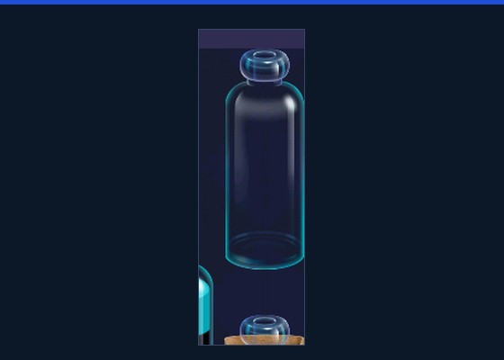
空瓶
真正的周转位。倒错后可以把颜色暂存，是隐藏层能被分批处理的前提。
Free 瓶
看一次激励视频换来的空瓶。它看起来像盘面的一部分，实际是一次广告入口。
问号瓶
下层被问号遮住。截图里顶层颜色通常仍露出，所以它是信息延迟，不是完全盲盒。
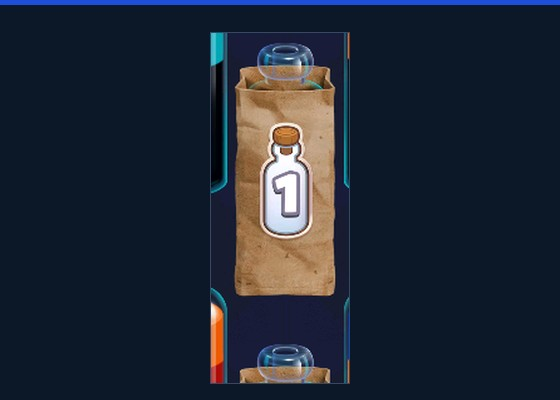
编号纸袋
完成 N 个纯色瓶后开启。它把收瓶进度变成开门条件，占住一个瓶位。
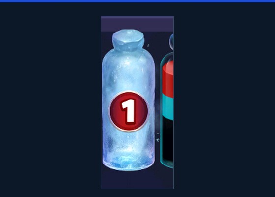
冰瓶
冰壳加数字，是多层的延迟信息与延迟空间。玩家要先处理冰层，才能看到里面。
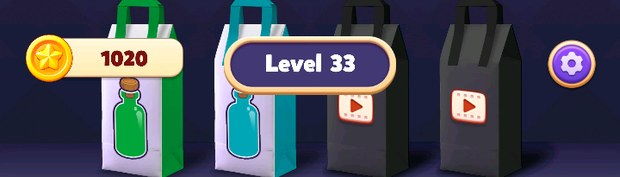
顶部收集袋
四个位置，左侧两个免费，右侧两个带播放图标。它是 meta 收集，不直接决定单关输赢。
图 1｜盘面元素，取自 L33、L34、L80 的实际首屏。问号瓶和冰瓶的具体解锁规则以游戏内为准，这里只描述首屏可见状态。
一关的动作链
前两步是视觉，第三步才是瓶颈。一个颜色很多但空瓶足够的关卡，仍然可以玩；一个颜色很少但没有空瓶的关卡，可能会卡死。问号和冰瓶让第三步更难，因为它们把“落点”藏了起来；纸袋则直接占住落点。
所以“难度”至少有三层：颜色配对的复杂度、信息可见度、空间可周转度。前两层决定要想多久，第三层决定错了还能不能回来。这款游戏的挫败感，大多来自第三层。
玩家真正需要的四步法
我在试玩里逐渐固定下来一套读盘方式，和市面上的排序攻略基本一致：
- 先找空瓶和单色瓶。空瓶是周转位，只有一层颜色的瓶子是准空瓶。
- 把颜色拆成四份链。优先处理能凑成完整一条链的颜色，避免把同色分散在四个瓶子里。
- 三份链 + 第四份隔一层。不要把最后一瓶同色过早锁死；留一层作为回旋，等其它颜色先走。
- 保底色。留一个单色底瓶作为回收位，等同色都到齐再收。收得太早，后面会少一个周转位。
这套方法属于这类游戏的基本读盘方式，算不上速通技巧。它把“看一步”变成“看三步”：先保证有地方放，再考虑先倒谁。会这套方法的人，看到 L33 会先找第二个空位；不会的人，会在第一步把唯一的空瓶填满。
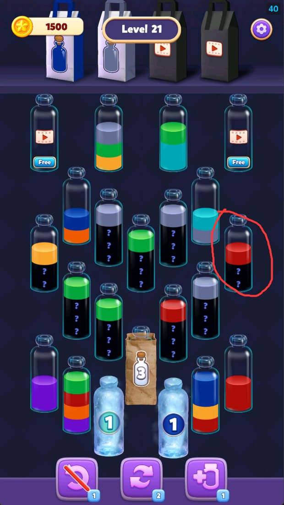
先保留单色底瓶，不急着收。
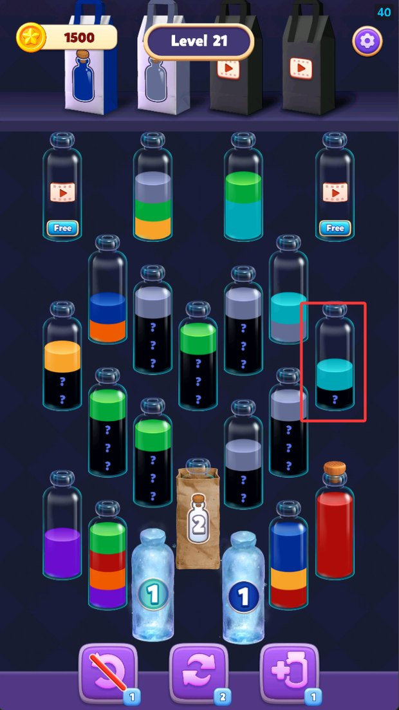
把同色顶层集中，红瓶完成。
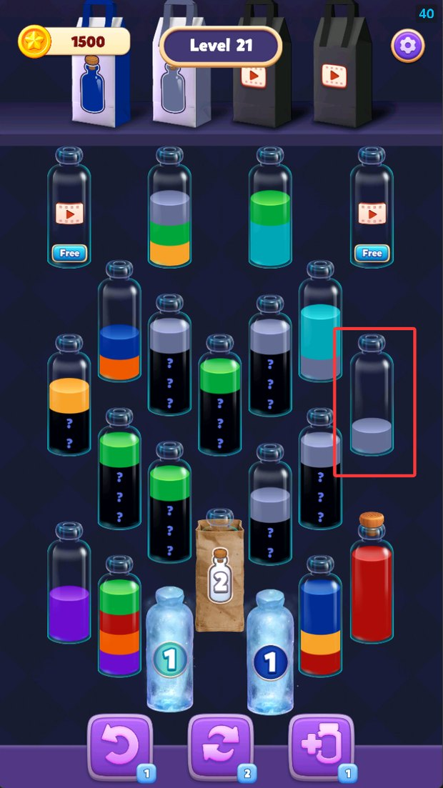
纯色瓶收走后，盘面多出一个位置。
图 2｜L21 的“保底色”三步，截图由我本人在测试包内操作并保存。它不是唯一解，但能说明这套游戏真正要求玩家做的规划。
三种假缓冲
“有空瓶”只是表面。真正要问的是：这个空位能不能让玩家做出一个可逆的第一步，并在第二步还有选择。按这个标准，前 100 关里至少能看到三种假缓冲。
A. 根本没有空瓶
L13 的首屏没有真正的空瓶，只有 2 个 Free；中央两个冰瓶 2 把盘面压满。完成率 44.1%，无结果 32.8%，平均尝试 2.15 次。玩家不是不会倒，是找不到一个安全的落点。L23、L26、L92 也是同类：0 个免费空瓶，广告位成了唯一出口。
B. 有空瓶，但第一步就把它占死
L33 有 1 个空瓶。第一步把红色倒入空瓶后，空瓶被占用，源瓶露出青色；盘面只剩纸袋和 Free。它确实“送了一个空瓶”，但这个空瓶只够完成第一步，不够形成第二步。完成率 15.9%，平均尝试 5.92 次，总耗时 823 秒。L49、L93、L98 是同一类：看上去有一个空瓶，实际只够启动一次。
C. 看起来有空位，实际被固定底色锁死
L80 开局有红、橙两个单色底瓶，看起来像两个空位；但它们的颜色是固定的，补满后还要回到原来的瓶子。前面的过程只是固定化简，真正的死锁在后面。完成率 60.9%，无结果 20.7%。这不是“难”，是解法被写死。
“80 设计的最巧妙，开局给你两个底色瓶红色和橙色……固定好的……最后一定还回来这两个瓶子直接死锁……前面的过程不过是固定的化简。”
| 判断项 | 真缓冲 | 假缓冲 |
|---|---|---|
| 第一步 | 不看广告就能做出一个合法动作 | 必须先看广告，或第一步只能赌 |
| 第一步之后 | 仍有第二个合法动作 | 唯一的空位被占死，动作集合骤减 |
| 空瓶归属 | 瓶内没有保留颜色 | 是单色底瓶，最后必须还原 |
| 错误恢复 | 倒错后还能把颜色暂存 | 倒错后只能重开或看广告 |
| 信息处理 | 能分批揭开隐藏层 | 必须一次算完整盘 |
表 3｜真假缓冲的判断。它比“首屏有几个空瓶”更接近玩家的真实体验，也更适合做关卡 QA。
前 100 关不是一条
平滑的难度曲线
它用尖峰做节奏：第 2 阶段是蜜月，第 4 阶段第一次断崖，第 8 阶段最舒适，第 10 阶段再次收紧。阶段中位数会盖住局部尖峰。
口径与判断方法
数据共 101 行，0 关是教程，1–100 关参与分析。我把每 10 关切成一个阶段，用阶段内百分位算健康分：完成率 45%、后关留存 35%、无结果反向 20%。另外叠加绝对红旗：完成率低于 50%、尝试次数异常、退出率异常等。分钟流失只做诊断，不进健康分，原因在第 3 节会单独说。
| 指标 | 在这份数据里的含义 | 为什么看它 |
|---|---|---|
| 完成率 | 进入本关的玩家中完成本关的比例 | 最直接的结果指标；但不能单独判断“难而黏”的关卡 |
| 关流失 | 完成本关但没有进入下一关的比例 | 衡量完成后还愿不愿意继续 |
| 分钟流失 | 关流失 / 总耗时 | 被时间归一化，受长局和完成者筛选影响，不能当总分 |
| 无结果 | 进入后没有形成通关结果的比例 | 把“玩到一半无声离开”从关流失里分出来 |
| 尝试次数 | 平均进入本关的次数 | 区分“想一下能过”和“反复试错” |
| 总耗时 | 胜利与重玩耗时的合计 | 判断一局是碎片时间还是加班 |
表 4｜指标口径。不同后台对“无结果”“退出”的统计边界可能不同，本文按题目提供的数据字段使用，不额外推断。
十段曲线
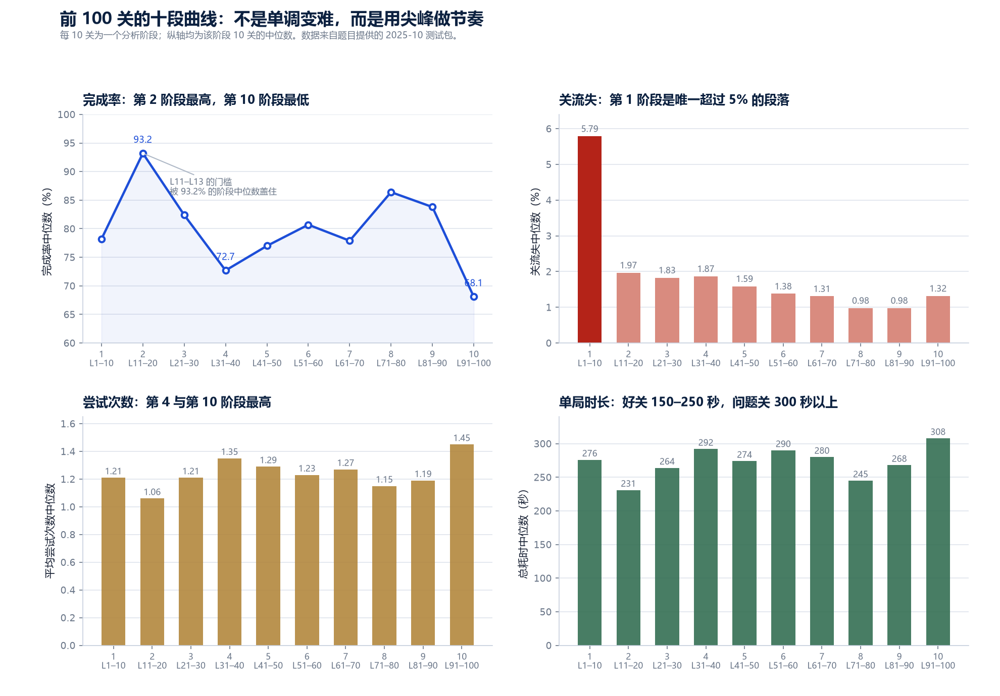
| 阶段 | 这一段发生了什么 | 完成率 | 关流失 | 无结果 | 尝试 | 耗时 | 代表关卡 |
|---|---|---|---|---|---|---|---|
| 1 L1–10 | 新手教学与第一次拥挤 | 78.2% | 5.79% | 20.1% | 1.21 | 276s | 好 L2 / L3 / L8 坏 L7 / L9 · 观察 L6 |
| 2 L11–20 | 三关下马威 + 七关蜜月 | 93.2% | 1.97% | 6.7% | 1.06 | 231s | 好 L14–L20 坏 L11 / L12 / L13 · 观察 — |
| 3 L21–30 | 稳定爬坡，两次局部卡点 | 82.4% | 1.83% | 13.1% | 1.21 | 264s | 好 L21 / L22 / L29 坏 L23 / L26 · 观察 L30 |
| 4 L31–40 | 第一次断崖 | 72.7% | 1.87% | 17.9% | 1.35 | 292s | 好 L34 / L38 / L39 坏 L33 / L40 · 观察 L32 |
| 5 L41–50 | 高峰后的恢复，L49 再次断崖 | 77.0% | 1.59% | 15.2% | 1.29 | 274s | 好 L41 / L46 / L48 坏 L49 · 观察 L44 / L45 |
| 6 L51–60 | 稳定扩圈，L55 局部问题 | 80.7% | 1.38% | 13.6% | 1.23 | 290s | 好 L52 / L57 / L59 坏 L55 · 观察 L54 / L60 |
| 7 L61–70 | 双峰夹击 | 77.9% | 1.31% | 15.3% | 1.27 | 280s | 好 L63 / L64 / L66 坏 L62 / L70 · 观察 L67 |
| 8 L71–80 | 全程最舒适 | 86.4% | 0.98% | 10.2% | 1.15 | 245s | 好 L73 / L77 / L79 坏 L80 · 观察 L72 / L74 |
| 9 L81–90 | 高位平台 | 83.8% | 0.98% | 11.6% | 1.19 | 268s | 好 L81 / L86 / L88 坏 无 · 观察 L85 / L90 |
| 10 L91–100 | 终局压力测试 | 68.1% | 1.32% | 16.6% | 1.45 | 308s | 好 L94 / L97 / L100 坏 L92 / L93 / L98 · 观察 — |
表 5｜十个阶段的中位数与代表关卡。完整 100 关标签见附录 A。
好关和坏关的画像
按阶段内健康分和绝对红旗，100 关里有 41 个好关、17 个坏关、4 个挑战观察、9 个偏难观察、29 个普通关。把 41 个好关和 17 个坏关的中位数放在一起，差异非常清楚：
| 指标 | 41 个好关 | 17 个坏关 | 差 | 读法 |
|---|---|---|---|---|
| 完成率 | 92.6% | 47.7% | −44.9pp | 好关几乎人人能走完，坏关一半左右的人没走完 |
| 关流失 | 1.14% | 3.27% | +2.13pp | 坏关完成后不继续的比例约为好关的三倍 |
| 无结果 | 6.8% | 24.9% | +18.1pp | 坏关近四分之一进入者没有留下结果 |
| 平均尝试 | 1.07 | 2.06 | +0.99 | 坏关把“玩一关”变成了“重试两遍” |
| 总耗时 | 217s | 365s | +148s | 坏关不是更耐玩，是更久 |
| 退出率 | 0.1% | 2.2% | +2.1pp | 坏关有更多主动退出 |
表 6｜好关与坏关的中位数画像。坏关的“难度”不是唯一问题：完成、留存、无结果、尝试、退出同时在恶化。
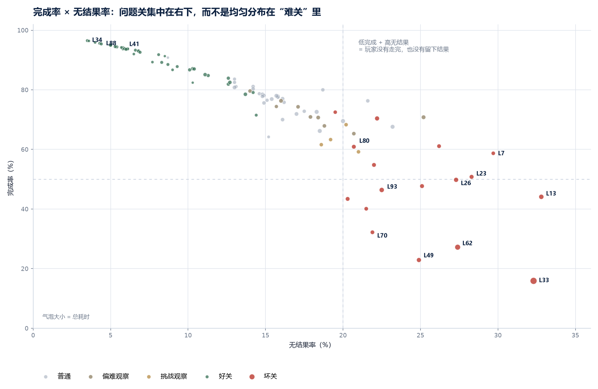
分钟流失为什么不能当总分
分钟流失 = 关流失 / 总耗时。它把不同长度的关卡拉到同一把尺子上，但这把尺子有两个陷阱：短关会把比率放大，长关会把比率摊薄；完成者筛选会让少数高意愿玩家把比率压低。
| 关卡 | 分钟流失 | 完成率 | 关流失 | 无结果 | 尝试 | 总耗时 | 结论 |
|---|---|---|---|---|---|---|---|
| L1 | 9.88% | 90.8% | 6.88% | 8.7% | 1.05 | 42s | 短关把比率放大；没人会说 L1 是坏关 |
| L88 | 0.18% | 95.4% | 0.66% | 4.4% | 1.05 | 217s | 低比率 + 高完成 + 低无结果，真正的好关 |
| L93 | 0.26% | 46.4% | 1.89% | 22.5% | 2.11 | 443s | 低比率被长时和完成者筛选掩盖，实际是尾部卡点 |
表 7｜分钟流失的三个反例。L1 证明短关会放大比率，L93 证明长关会摊薄比率；同一个数字在不同分母下不是同一件事。
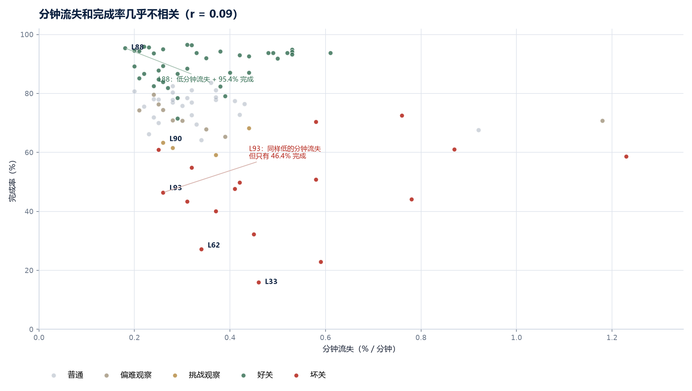
所以低分钟流失不是好关的充分条件，也不是必要条件。真正要看的是四件事：完成率是否够高、无结果是否够低、尝试次数是否接近 1、总耗时是否在碎片时间范围内。四项都健康，分钟流失才是加分项；只要有一项异常，低分钟流失就先当作“需要解释的信号”。
广告门：
三种“送了空瓶”的假动作
把免费空瓶和广告空瓶分开数，前 100 关里最清楚的一条分界线出现了：免费空瓶 0–1 的关卡全部低完成，2–3 的全部高完成。
题目要求按“不看广告”的难度评估，这是对的。但 IAA 产品的体验不能只算免费部分：盘面上的 Free 瓶确实能被玩家拿到，只是要先看一次视频。所以我做了两组读数：一组是免费空瓶，一组是广告空瓶。两组都来自首屏截图的人工计数，共 7 关，样本不大，但足够看清方向。
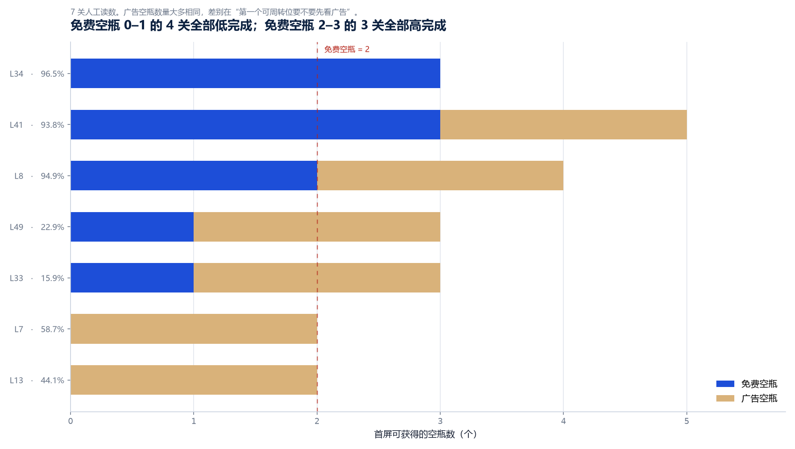
| 关卡 | 免费空瓶 | 广告空瓶 | 总缓冲 | 完成率 | 无结果 | 尝试 | 耗时 | 读法 |
|---|---|---|---|---|---|---|---|---|
| L7 | 0 | 2 | 2 | 58.7% | 29.7% | 1.61 | 306s | 广告是唯一缓冲，仍然不够 |
| L13 | 0 | 2 | 2 | 44.1% | 32.8% | 2.15 | 447s | 满盘 + 中央双冰，广告也救不了 |
| L33 | 1 | 2 | 3 | 15.9% | 32.3% | 5.92 | 823s | 唯一免费空瓶被第一步占死，2/3 缓冲要广告 |
| L49 | 1 | 2 | 3 | 22.9% | 24.9% | 4.22 | 406s | 总缓冲与 L33 相同，免费部分只有 1 个 |
| L8 | 2 | 2 | 4 | 94.9% | 5.0% | 1.04 | 224s | 广告是加分项，不是启动条件 |
| L41 | 3 | 2 | 5 | 93.8% | 5.9% | 1.06 | 242s | 免费缓冲充足，广告不是必需 |
| L34 | 3 | 0 | 3 | 96.5% | 3.5% | 1.03 | 217s | 3 个缓冲全免费，最顺的模板 |
表 8｜7 关的免费 / 广告空瓶对照。免费空瓶 0–1 的四关完成率 15.9%–58.7%，免费空瓶 2–3 的三关 93.8%–96.5%。这是人工读数，不是全量标注，结论按线索处理。
L33 与 L34：同一阶段，相邻两关，差了 80 个百分点
L33 和 L34 相邻、同属 31–40 阶段，都大量使用问号和纸袋位，总缓冲都是 3 个。差别在获取方式：L34 的 3 个空瓶全部免费，L33 只有 1 个免费、另外 2 个在 Free 位。完成率 96.5% 对 15.9%，平均尝试 1.03 对 5.92，总耗时 217 秒对 823 秒。
1 个免费空瓶，第一步把红色倒入后，空瓶被占死。盘面只剩纸袋和 Free。
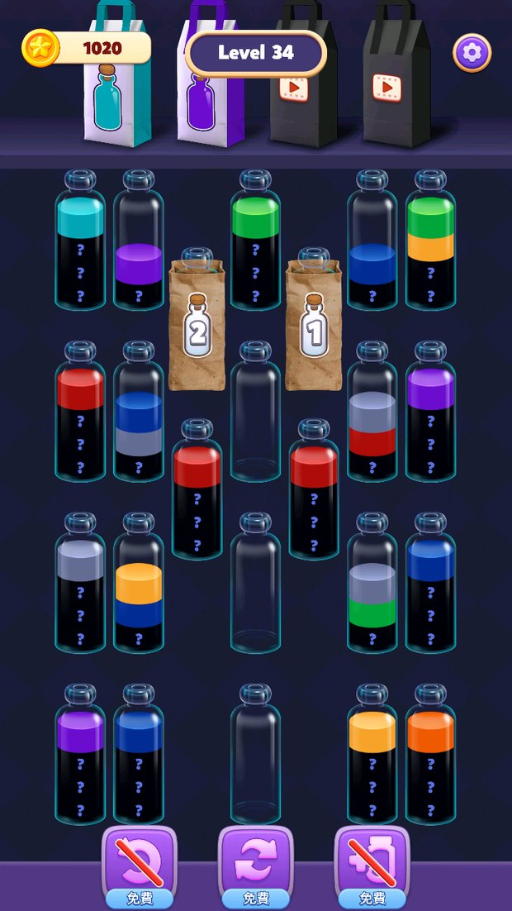
3 个免费空瓶，第一步倒错后仍有两个位置可以回旋。同为 3 个总缓冲，体验完全不同。
这两关不是控制变量的实验：瓶子数量、颜色分布、纸袋位置都不同，不能把 80 个百分点的差距全部归给“免费空瓶”。但它们提供了同一阶段、相邻关卡、相同核心机制的强对照。首屏的差异非常直接：L34 有三个可以落子的空位，L33 只有一个，而且这个空位一用就没了。
L41 和 L49 重复了同一模式。两关都在 41–50 阶段，都是长盘、都有 Free 位；L41 有 3 个免费空瓶 + 2 个广告位，L49 只有 1 个免费 + 2 个广告位。完成率 93.8% 对 22.9%，尝试 1.06 对 4.22。
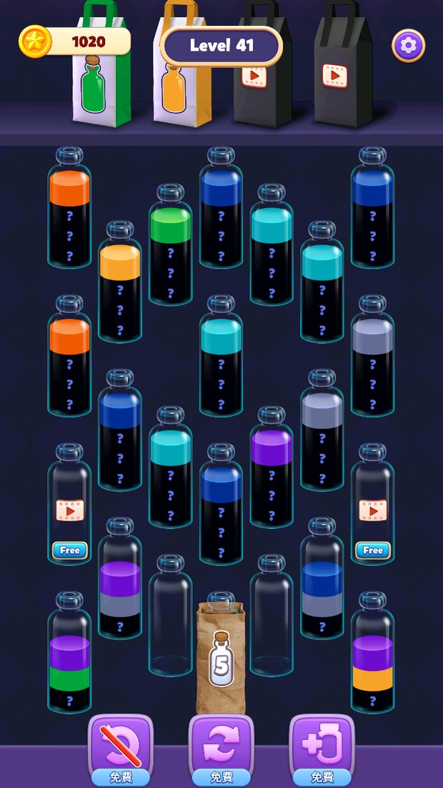
3 个免费空瓶 + 2 个广告位。广告是额外的从容，不是启动条件。
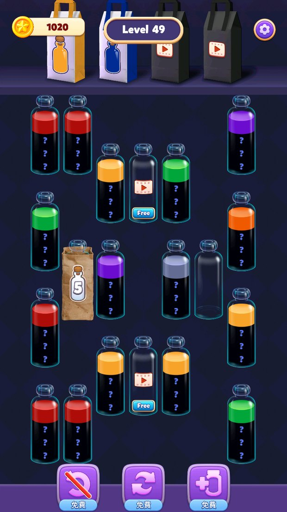
1 个免费空瓶 + 2 个广告位。长盘、重复顶色，唯一的空瓶很快被占死。
广告空瓶救不了没有缓冲的盘面
L7 和 L13 都有 2 个 Free，没有免费空瓶。如果“广告空瓶等于空瓶”，这两关应该能靠广告补足缓冲；结果是完成率 58.7% 和 44.1%，无结果 29.7% 和 32.8%。L13 更极端：中央两个冰瓶 2 把盘面压满，2 个 Free 都在，但广告看完也只是多两个位置，盘面本身没有可读的第一步。
这说明广告空瓶和免费空瓶不是同一种资源。免费空瓶是“现在就能用的选择”，广告空瓶是“先付出注意力再获得的选择”。在玩家已经卡住、开始怀疑自己会不会玩的时候，后者不是帮助，是加价。
L80：看起来有空位，实际上没有解法
L80 是另一种更隐蔽的假缓冲。开局有红、橙两个单色底瓶，瓶内上部是空的，看起来像两个可以暂存的空位；但它们的颜色固定，补满后还要回到原来的瓶子。前面的操作只是固定化简，真正的局面从“两个底瓶必须还原”才开始。数据上它不算最差：完成率 60.9%、无结果 20.7%、尝试 1.62；但它出现在全程最舒适的 71–80 阶段，是一段顺滑曲线里突然出现的固定解。
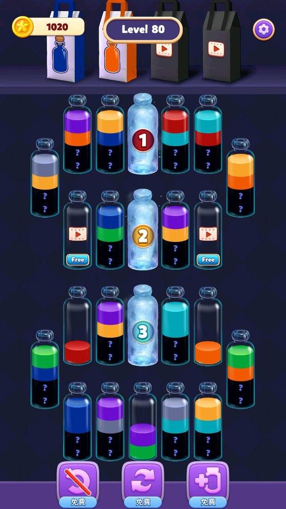
红、橙两个单色底瓶，瓶口上方是空的，容易被读成两个空位。
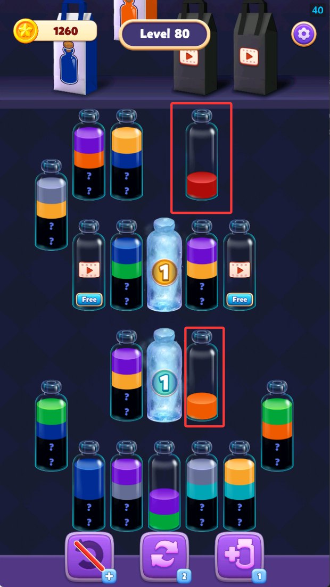
两个底瓶补满后必须回到原位，前面的化简没有改变最后的死锁。
这类关卡的问题不在难度：解法被写死了。玩家以为自己在做选择，实际是在走一条固定的化简路线；等走到最后，才发现两个瓶子互相锁住。广告能加一个空瓶，但加不出一个新的解法。对 IAA 产品来说，这种关卡最危险：它既没有免费缓冲，也没有广告带来的真实增益。
广告门阶梯
把上面的案例按“第一个周转位要不要先看广告”排成四级，会得到一条很清楚的阶梯：
免费可玩
2–3 个免费空瓶；广告只是额外奖励。玩家可以完全不看广告完成。
广告加速
1 个免费空瓶 + 广告位；能启动，但广告让过程更从容。
广告开门
0 个免费空瓶；广告是第一步，不看广告就没有可行动作。
广告也救不了
满盘 + 固定解 / 固定底色；加一个空瓶也解不开。
IAA 产品应该把绝大多数关卡放在 LEVEL 0，少量放在 LEVEL 1；LEVEL 2 是“广告开门”，短期能拉高广告观看，长期会把新玩家挡在门外；LEVEL 3 是设计失败，广告和关卡都没有提供真实的下一步。
| 阶梯 | 玩家的第一动作 | 广告的角色 | 适合放什么关卡 | 风险 |
|---|---|---|---|---|
| LEVEL 0 | 不看广告就能做 | 加分项 | 教学关、蜜月关、节奏缓冲关 | 广告收入低，但留存稳 |
| LEVEL 1 | 能启动，但选择少 | 加速器 | 阶段中段的挑战关 | 广告被当成“应该看”的默认动作 |
| LEVEL 2 | 必须先看广告 | 过路费 | 不建议放在前 30 关 | 无结果、退出、差评；广告收益被流失抵消 |
| LEVEL 3 | 看了也不一定解 | 无效 | 不应该存在 | 玩家学会“看广告也没用”，信任受损 |
表 9｜广告门阶梯。这是我用来评审“广告位是否侵入核心解题”的工具，不是官方分级。
数据为什么会误判：广告观看是当天就能看到的收入，无结果和流失却常常被归到“关卡难”或“用户质量”里。只盯广告观看率，会把 LEVEL 2 误判成高价值关卡；把完成率、无结果、下一关承接一起看，才会发现门开在了错误的位置。
游戏没有教玩家
那套四步法
它教了“点瓶子、倒颜色”，但没有教“先找空瓶、拆四份链、保底色”。前 10 关就出现广告墙，而策略教学还没开始。
先把我在试玩当时写下的原话完整放这里。它比任何抽象总结都更能说明新玩家卡在哪里：
“感觉关卡顺序非常不合理，而且没有新手教程和引导，以及说明，比如，给玩家讲解各种元素是干嘛的，比如，关卡最上方的四个袋子是干嘛的，为啥有两个袋子要看广告解锁，实际上这玩意儿是收已经换好的纯色瓶子的，但是没啥卵用我觉得，我知道了，这应该是手感设计，因为袋子收瓶子尤其是连收时的音效和动画确实吸引人，但是有负面体验：玩家换好的纯色瓶子颜色和上面的袋子不符合的话，就会堆积在下面，本来颜色就五花缭乱伤眼睛，要是我设计就会成功一个瓶子就消失一个，然后屏幕四周发出该瓶子的光效，直至下一个瓶子纯色成功。还有什么问号瓶，带数字的纸袋瓶，数字代表多少纯色瓶成功才解锁，冰冻瓶等，本质上就是 4 层的问号瓶罢了。本来关卡难度曲线设计的就不行，引导还差，没有任何征兆的引入新瓶子，增加用户的理解程度，自然会影响留存率。而且没有演示关卡教用户玩这个游戏的策略，就特别容易挫败，我是策划要求玩 20 关都差点放弃了，11 关以后才找到诀窍开始爽起来，回头玩第 4 关等难关，就一遍过了。不看广告，当然全都是一遍过广告收益又没有，这也是关卡设计问题。简而言之，用户教育成本太高，留不住客户，新玩家不会玩，挫败感太强”
这段话里有三件事值得拆开：关卡顺序、元素说明、策略教学。它们不是同一个问题，但会互相放大。
前 10 关到底教了什么
| 关卡 | 我实际遇到的 | 完成率 | 关流失 | 无结果 | 教学作用 |
|---|---|---|---|---|---|
| L1 | 超简单，入门 | 90.8% | 6.88% | 8.7% | 教会“点两个瓶子倒水” |
| L2 | 颜色少、空瓶多，基本一眼能倒 | 93.1% | 3.73% | 6.8% | 巩固基本操作 |
| L3 | 有点难度但不高 | 91.3% | 4.32% | 8.5% | 引入轻微规划 |
| L4 | 瓶子多、空瓶一个，卡关 | 76.3% | 7.87% | 21.6% | 没有预告的第一次加码 |
| L5 | 没有空瓶，卡了一次 | 80.0% | 8.86% | 18.7% | 把“空瓶”变成稀缺资源 |
| L6 | 给了两个空瓶，仍卡关 | 70.8% | 6.89% | 25.2% | 空瓶数量不是充分条件 |
| L7 | 卡两次，看一次广告才过 | 58.7% | 6.28% | 29.7% | 第一次广告墙 |
| L8 | 好关，一遍过，不用看广告 | 94.9% | 1.97% | 5.0% | 本应是教学模板，却排在墙后 |
| L9 | 两个空瓶和冰冻瓶，一遍过 | 61.1% | 4.91% | 26.2% | 冰瓶首次出现，没有说明 |
| L10 | 没有空瓶，问号多，容易卡 | 67.6% | 5.31% | 23.2% | 隐藏信息密集出现 |
表 10｜前 10 关的数据与我的实际体验。L4–L6 的高关流失可能还混有广告、体力或下一关承接的影响，不能全部归因于关卡难度。
从数据看，前 10 关的结构是：三关轻松入门，接着四关连续加码，L7 出现第一道广告墙，L8 突然送分，L9–L10 又把冰瓶和隐藏信息堆上来。它更像锯齿，三关松、四关紧、突然送分、再突然收紧。对新玩家来说，真正危险的是不知道下一关为什么会突然变难。
更关键的是，前 10 关没有教那套真正有用的四步法。L1–L3 只需要“看到同色就倒”，L4 开始要求“先找空瓶”，L7 要求“没有免费空瓶时判断要不要看广告”，但游戏没有用任何一关把“空瓶是周转位”这件事讲清楚。玩家只能从失败里猜。
元素说明的缺口
顶部四个袋子、问号瓶、编号纸袋、冰瓶、Free 瓶，都是在没有说明的情况下逐个出现的。玩家需要自己推断：哪个袋子是收集位，哪个要广告，纸袋上的数字代表什么，冰瓶要怎样解开。我的原话里有一句很直接：“没有任何征兆的引入新瓶子，增加用户的理解程度，自然会影响留存率。”玩家并非不愿意学；游戏没有给学习的机会。
这里有一个很容易被忽略的细节：问号瓶并不等于“完全看不见”。截图里大多数问号瓶的顶层颜色仍然露出，玩家可以先按顶色配对，再逐步揭开下层。真正让问号变成噪音的，是它和满盘、缺少空瓶同时出现。教学应该先教“顶层可读、下层可后揭”，而不是一上来就把整瓶涂成问号。
先教策略，再教元素
如果我来重排前 10 关，会先教策略，再教元素。顺序大概是这样：
| 教学关 | 只教一件事 | 盘面条件 | 禁止出现 |
|---|---|---|---|
| 教学 A | 空瓶是暂存位：倒错了还能回来 | 3 个免费空瓶、2–3 种颜色、无问号 | 广告位、冰瓶、纸袋 |
| 教学 B | 先看顶色，再看下层；问号可以后揭 | 3 个免费空瓶、每瓶最多 1 层问号 | 广告位、冰瓶、纸袋 |
| 教学 C | 保底色：单色底瓶最后再收 | 2 个免费空瓶、1 个单色底瓶、无问号 | 广告位、冰瓶、纸袋 |
| 教学 D | 纸袋是进度门，不是颜色 | 2 个免费空瓶、1 个纸袋、数字为 2 | 广告位、冰瓶 |
| 教学 E | 冰瓶是延迟信息，先处理冰层 | 2 个免费空瓶、1 个冰瓶、无纸袋 | 广告位 |
表 11｜前 5 个教学关的建议结构。每关只引入一个变量，并且始终保留 2–3 个免费空瓶；广告位在玩家学会四步法之前不出现。
这套教学不需要弹出长说明。它可以用三到五关、每关 30–60 秒完成：第一关让玩家亲手体验“倒错还能回来”，第二关让玩家看到“问号下面还有一层”，第三关让玩家体会“收得太早会少一个位置”。等玩家有了身体记忆，再解释元素名称，效果会比一开始塞一段文字好得多。
顺序建议：先教四步法 → 再引入纸袋和冰瓶 → 再引入广告空瓶。第一次广告 offer 放在第 10 关之后，而且放在“完成后”而不是“卡关时”：让玩家先体验过完整的一关，再决定要不要为更从容的下一关看广告。
个人体验和数据标签不一致的地方
这次试玩里有几关，我的判断和全量数据不一样，值得单独记下来：
| 关卡 | 我的判断 | 数据标签 | 完成率 | 无结果 | 为什么不一致 |
|---|---|---|---|---|---|
| L4 | 坏关，包劝退 | 普通 | 76.3% | 21.6% | 我卡了一次，但全量完成率仍高于 50%；关流失 7.87% 更值得查 |
| L6 | 坏关，必须看广告 | 偏难观察 | 70.8% | 25.2% | 完成率没低到红旗，但无结果和关流失都偏高 |
| L9 | 好关，一遍过 | 坏关 | 61.1% | 26.2% | 我恰好用两个空瓶过了；全量里有四分之一的人没有留下结果 |
| L11 | 好关，难度适中 | 坏关 | 72.5% | 19.5% | 我的操作熟练度已经上来；新玩家在这一关还没有四步法 |
表 12｜个人试玩与全量数据的差异。个人体验解释首屏，数据代表 cohort，两者不能互相替代，也不必分出谁对谁错。
强制广告的短期收入
和它的延迟成本
一次激励视频大约值几厘钱；一个被劝退的玩家，未来还能贡献几十次广告。广告门是否划算，取决于它劝退了多少本来会留下的人。
这一节是示意模型，不是这款产品的后台。我不知道它真实的 eCPM、填充率、人均广告观看和留存，所以只算方向：把“一次广告的收入”和“一个玩家未来可能贡献的广告收入”放在一起，看看广告门的盈亏平衡点在哪里。
一个简化公式
| 变量 | 取值 | 说明 |
|---|---|---|
| 单次激励视频收入 | $0.008 | 按 eCPM $8 估算；不同地区、品类、填充率会差很多 |
| 人均每关广告观看 | 0.8 次 | 不是每关都看，按混合值估算 |
| 被劝退玩家剩余关卡 | 20 关 | 假设他本来还会玩 20 关；实际可能更多或更少 |
| 剩余广告价值 | $0.128 | 20 × 0.8 × $0.008 |
| 广告门盈亏平衡流失率 | 约 5.9% | 0.008 / (0.128 + 0.008) |
表 13｜广告门的简化盈亏平衡。假设广告门带来的观看是增量、玩家没有其它付费、未来广告价值按同一 eCPM 计算。它只用于判断量级，不是财务预测。
在这个假设下，如果一道广告门让超过约 6% 的玩家离开，而这些人本来还会玩 20 关，那么这道门带来的增量广告收入就被未来损失抵消了。这个阈值对“剩余关卡数”非常敏感：
| 被劝退玩家本来还会玩 | 未来广告观看 | 未来广告价值 | 盈亏平衡流失率 |
|---|---|---|---|
| 10 关 | 8 次 | $0.064 | 11.1% |
| 20 关 | 16 次 | $0.128 | 5.9% |
| 40 关 | 32 次 | $0.256 | 3.0% |
表 14｜剩余关卡越多，广告门能承受的流失率越低。一个在 L33 被劝退的新玩家，本来可能还会玩几十关；这道门的真实成本比当天看到的广告收入大得多。
为什么“多加一道门”常常不是最优解
广告门的收益是即时的，成本是延迟的。当天看报表，广告观看和 eCPM 都上去了；无结果和流失可能被记成“关卡难度”或“用户质量”，甚至根本不在同一张表里。于是团队会得到一个大致的错觉：门越多，收入越高。实际发生的循环可能是：
这不是说所有广告门都坏。完成后的插屏、可选的双倍奖励、额外的收集位，都可以是正收益。问题在于把广告放在“唯一可行动作”上：它把玩家从“我想继续玩”变成“我必须先看广告”。前者是交易，后者是勒索。
我会同时看的指标
| 层级 | 指标 | 用途 | 警戒信号 |
|---|---|---|---|
| 收入 | ARPDAU | 整体变现效率 | 只涨 ARPDAU，D1/D7 下跌 |
| 人均广告观看 / 广告渗透率 | 广告位是否被使用 | 观看涨，但完成率跌 | |
| eCPM / 填充率 | 广告库存价值 | 用低质广告填量，伤害体验 | |
| 体验 | 完成率 / 无结果 | 关卡是否可玩 | 完成率跌 5pp 以上，无结果涨 3pp 以上 |
| 平均尝试 / 总耗时 | 是否在反复试错 | 尝试 >2，耗时 >400s | |
| 下一关进入率 | 完成后是否继续 | 关流失持续高于阶段中位 | |
| 留存 | D1 / D7 | 广告频率的长期代价 | 广告观看涨，D1/D7 跌 |
| 广告相关流失 / 负反馈 | 玩家是否把广告当成离开原因 | 评论、客服、问卷出现集中提及 |
表 15｜IAA 产品的联合指标。收入指标和体验指标必须同表看；只优化其中一边，另一边会以更慢的速度恶化。
一个可执行的决策规则：如果一道广告门让 ARPDAU 上升，但完成率下降超过 5pp、无结果上升超过 3pp，或者 D1 下降，就先不要上线。先把它改成“完成后可选”，再看同样的指标。广告门可以加，但不能拿核心可玩性去换。
先把关卡修到能玩，
再谈广告位
修法不是简单调低颜色数。先保证免费缓冲，再把隐藏层和道具位从核心视线里移开，最后才决定广告放在哪里。
优先修的九关
下面是我会先动的九关。改法不是唯一解，但每一关都对应一个明确的体验问题：没有空瓶、空瓶被第一步占死、固定死锁、或者隐藏层和道具位一起把首屏压满。
| 关卡 | 当前问题 | 建议改法 | 目标 |
|---|---|---|---|
| L13 | 0 免费 + 2 Free；中央双冰 2，满盘 | 把 1 个 Free 改成免费空瓶，或移除 1 个中央冰瓶 | 至少 2 个免费空瓶；无结果压到 15% 以下 |
| L33 | 1 免费 + 2 Free；唯一空瓶被第一步占死 | 把 1 个 Free 改成免费，再加 1 个真空瓶；纸袋移出中央视线 | 3 个免费空瓶；尝试降到 2 次以内 |
| L49 | 1 免费 + 2 Free；长盘重复顶色 | 把 1 个 Free 改成免费，减少重复顶色的诱导 | 2 个免费空瓶；完成率翻倍 |
| L62 | 1 免费 + 2 Free；中央 1/2/3 三连纸袋切断视线 | 移除中央 1 个纸袋，改成免费空瓶；纸袋分散到两侧 | 2 个免费空瓶；首屏可扫视 |
| L70 | 1 免费 + 2 Free；2 个冰瓶 1，盘面几乎全问号 | 加 1 个免费空瓶；前 70 关把冰瓶降到 1 个 | 2 个免费空瓶；尝试降到 2 次以内 |
| L80 | 红/橙两个固定底色瓶，看起来像空位，最后死锁 | 取消“必须还原”的固定底色，或明确标记为不可暂存；加 1 个真空瓶 | 不出现固定死锁；无结果压到 10% 以下 |
| L92 | 0 免费 + 2 Free；4 个冰瓶 1，满盘三层问号 | 把 1 个 Free 改成免费，减少 1 个冰瓶 | 2 个免费空瓶；完成率提升到阶段中位 |
| L93 | 1 免费 + 2 Free；只有两种颜色能启动 | 加 1 个免费空瓶；增加 1 个可启动的顶色 | 3 个可启动颜色；无结果压到 15% 以下 |
| L98 | 1 免费 + 2 Free；最多三个颜色能启动 | 加 1 个免费空瓶；减少 2–3 层问号的比例 | 2 个免费空瓶；尝试降到 2 次以内 |
表 16｜优先修的九关。目标值是建议，不是保证；上线前应该用 A/B 验证。L7、L23、L26 也应该按同样标准检查，只是它们的结构问题与上表重复，没有单列。
可复制的模板
L34、L41、L8、L88 这四关可以作为模板。它们的共同点是首屏有足够的选择，和“简单”无关：
首屏至少有两个不用看广告就能用的周转位
玩家不会在首屏就卡住
一次到两次能过，不需要反复重开
碎片时间可以完成，不像加班
这四关的完成率在 93.8%–96.5%，无结果 3.5%–5.9%，尝试 1.03–1.06。它们也都有问号或冰瓶，说明“有隐藏信息”本身不是问题；问题是有没有足够的空间让玩家分批处理。
广告位的七条规则
| # | 规则 | 为什么 | 怎么验收 |
|---|---|---|---|
| 1 | 先保证不看广告可玩 | 广告是加分项，不是启动条件 | 无广告基线至少 2 个免费空瓶 |
| 2 | 广告只能卖第 3、第 4 个缓冲位 | 第一个缓冲位决定“能不能试”，后面的才决定“试得顺不顺” | Free 位不在首屏唯一空位上 |
| 3 | 新机制第一次出现时不收费 | 玩家还在学规则，不应该同时面对广告 | 纸袋/冰瓶首次出现关卡无广告位 |
| 4 | 前 10 关不放广告门 | 先让玩家体验到完整的一关，再谈交易 | L1–L10 的 Free 位为 0 |
| 5 | 一次关卡最多一个广告 offer | 连续广告会把“可选”变成“围堵” | 单关广告触点 ≤1 |
| 6 | 广告位不要伪装成盘面元素 | Free 瓶看起来像普通瓶子，玩家点了才知道是广告 | 广告 offer 在盘面外，明确标注“看广告 +1 空瓶” |
| 7 | 把无结果和下一关承接写进广告验收 | 只看广告观看会把坏门当成好门 | 广告上线前后对比完成率、无结果、D1 |
表 17｜广告位规则。这些约束来自这 100 关，可以直接写进评审清单；不要把它们当成行业通用定律。
首 30 关的重排
| 区间 | 目标 | 建议使用 | 不要放 |
|---|---|---|---|
| L1–L3 | 教会“倒水 + 空瓶是暂存位” | 3 个免费空瓶、2–3 色、无问号 | 广告、冰瓶、纸袋 |
| L4–L6 | 教会“先看顶色，再看下层” | 3 个免费空瓶、每瓶最多 1 层问号 | 广告、冰瓶、纸袋 |
| L7–L9 | 建立第一次“我学会了”的爽感 | 现 L8、L34 这类高完成模板；把现 L7/L13 后移 | 唯一空瓶、满盘 |
| L10–L12 | 引入纸袋，教“收瓶进度是门” | 2 个免费空瓶、1 个纸袋、数字 2 | 广告门、多个冰瓶 |
| L13–L15 | 引入冰瓶，教“延迟信息” | 2 个免费空瓶、1 个冰瓶 | 广告门、固定底色 |
| L16–L20 | 组合纸袋 + 冰瓶，保持 2 个免费空瓶 | L14–L20 的蜜月结构 | 三连纸袋、满盘 |
| L21–L30 | 引入可选广告位，A/B 测试“完成后再 offer” | L21、L22、L29 类好关；广告位放在盘面外 | 把 Free 瓶塞进唯一空位 |
表 18｜首 30 关的重排建议。现有关卡可以复用，但顺序要改：把“高完成模板”提前，把“满盘 + 广告门”后移，等玩家学会四步法再出现。
广告呈现方式
现在的 Free 瓶直接画在盘面里，和普通瓶子长得一样。玩家要先点一下，才知道它要广告。这个设计把“广告”伪装成了“关卡元素”，会让第一次遇到的人产生被欺骗感。更清楚的做法是：把广告 offer 放在盘面外，写成“看广告 +1 空瓶（可选）”，玩家点了之后再让瓶子飞进盘面。
如果一定要保留盘内 Free 位，至少要做三件事：用不同的瓶身/边框；在瓶口上方标“广告”而不是只写 Free；第一次出现时用一次轻提示说明“这是看广告解锁的空瓶”。这三件事不改变难度，只改变信息透明度。
A/B 测试计划
下面的计划用于验证“把广告从唯一缓冲位移开”是否真的能提升体验，同时不显著伤害广告收入。它不是一次就能定论的实验，但比拍脑袋改关卡可靠。
| 组 | 改法 | 验证假设 | 主要指标 |
|---|---|---|---|
| A / 对照 | 现版本：1 免费 + 2 Free | 基线 | 完成率、无结果、尝试、广告观看、D1 |
| B / 加免费 | 2 免费 + 2 Free | 免费缓冲增加会提升完成率、降低无结果 | 完成率 +5pp、无结果 −3pp |
| C / 后置 offer | 2 免费 + 完成后可选广告 | 广告从“开门”变成“加码”，不伤首屏 | 广告观看不降 10% 以上，D1 不降 |
| D / 纯基线 | 3 免费，无广告位 | 测量“完全没有广告门”的体验上限 | 完成率、D1 的上限；用于定价广告位 |
表 19｜A/B 分组。建议先在 L33、L49 两关做小流量实验，再推广到同结构的 L62、L70、L92、L93、L98。
样本量按基线完成率 30%、最小可检测差异 5pp、双侧 α=0.05、power=0.8 估算，每组约 1,300–1,600 人；如果只看无结果率，样本要更大。实验至少要跑满一个七天周期，避免把周末和工作日的差异当成版本效果。
决策规则可以写得很具体：B 组完成率提升 ≥5pp、无结果下降 ≥3pp，且广告观看/DAU 下降不超过 10%，就进入下一轮；如果完成率提升但 D1 下降，说明广告只是被推迟，不是被消化，需要重新设计 offer 的时机。C 组如果广告观看不降、D1 不降，说明“完成后可选”是更健康的广告位。
上线前的关卡 QA 清单
首屏：有没有至少 2 个免费空瓶？有没有一个不看广告就能做的合法第一步？
第二步：第一步做完后，是否还有至少 2 个合法动作？唯一的空位会不会被占死？
信息：顶层颜色是否可读？问号是否只遮下层？首屏能不能在不记忆的情况下找到第一组同色？
结构：纸袋/冰瓶是否占据核心视线？有没有固定底色导致的死锁？
广告：Free 位是否在唯一空位上？第一次出现的新机制有没有同时出现广告？
数据：上线前是否用机器人或小样本跑过“无广告通关”？尝试次数是否 ≤2？总耗时是否 ≤300 秒？
可迁移的八条
IAA 关卡原则
不只适用于 Water Match。任何把广告放进核心资源的休闲产品，都可以用这八条做第一轮评审。
- 广告卖“更从容”，不卖“能不能玩”。第一个可行动作必须在免费版本里成立；广告只能让后面更顺。
- 先给免费缓冲，再卖额外缓冲。2–3 个免费空瓶是这类排序游戏的安全线；0–1 个就开始考验玩家运气。
- 新机制第一次出现时不收费。玩家还在学规则，不应该同时处理广告。教学关的广告位应该是 0。
- 广告位不要伪装成盘面元素。Free 瓶看起来像普通瓶子，会让玩家在点击后产生被欺骗感；把 offer 放到盘面外，写清楚代价和收益。
- 一次关卡只卖一次。连续广告会把“可选”变成“围堵”，也会让玩家学会快速退出。
- 用完成率、无结果、下一关承接做护栏。只看广告观看率，会把 LEVEL 2 的坏门误判成好门。
- 难度由可周转位决定，不由颜色数量决定。颜色多但空瓶够，玩家仍然能玩；颜色少但没空瓶，玩家第一步就卡。
- 教学要教策略，不是教按钮。“点两个瓶子”谁都会；四步链和保底色才是这款游戏真正的门槛。
回到最初的问题：Water Match ASMR 好玩吗？好玩。倒水的 ASMR、颜色归位的秩序感、揭开下层后的顿悟、收瓶时的连击反馈，这些都是真实存在的。它的底子不差，关卡也不是全都坏：41 个好关、整段 14–21 的蜜月、71–80 的舒适区，都说明团队知道怎么做顺滑的关卡。
它的问题是把广告放在了“解题的第一步”上。对一款 IAA 产品来说，这很划算，也很危险：短期能换来广告观看，长期会让新玩家在学会四步法之前就离开。把广告往后挪一格，先给玩家两个免费空瓶，再卖第三个、第四个，收入未必会少，留存会更好。
100 关标签总表
每个格子是“关卡号 + 完成率 + 数据标签”。绿色是好关，红色是坏关，橙色是挑战观察，浅棕是偏难观察，灰色是普通。标签来自阶段内健康分 + 绝对红旗，不是全表完成率排名。
展开 100 关明细数据
| 关卡 | 阶段 | 完成率 | 关流失 | 无结果 | 尝试 | 总耗时 | 分钟流失 | 标签 |
|---|---|---|---|---|---|---|---|---|
| L1 | 1 | 90.8% | 6.88% | 8.7% | 1.05 | 42s | 9.88% | 普通 |
| L2 | 1 | 93.1% | 3.73% | 6.8% | 1.05 | 53s | 4.21% | 好关 |
| L3 | 1 | 91.3% | 4.32% | 8.5% | 1.07 | 125s | 2.08% | 好关 |
| L4 | 1 | 76.3% | 7.87% | 21.6% | 1.22 | 282s | 1.67% | 普通 |
| L5 | 1 | 80.0% | 8.86% | 18.7% | 1.19 | 271s | 1.96% | 普通 |
| L6 | 1 | 70.8% | 6.89% | 25.2% | 1.33 | 351s | 1.18% | 偏难观察 |
| L7 | 1 | 58.7% | 6.28% | 29.7% | 1.61 | 306s | 1.23% | 坏关 |
| L8 | 1 | 94.9% | 1.97% | 5.0% | 1.04 | 224s | 0.53% | 好关 |
| L9 | 1 | 61.1% | 4.91% | 26.2% | 1.57 | 338s | 0.87% | 坏关 |
| L10 | 1 | 67.6% | 5.31% | 23.2% | 1.43 | 348s | 0.92% | 普通 |
| L11 | 2 | 72.5% | 3.69% | 19.5% | 1.34 | 291s | 0.76% | 坏关 |
| L12 | 2 | 70.4% | 3.88% | 22.2% | 1.38 | 400s | 0.58% | 坏关 |
| L13 | 2 | 44.1% | 5.85% | 32.8% | 2.15 | 447s | 0.78% | 坏关 |
| L14 | 2 | 93.0% | 1.76% | 6.8% | 1.07 | 253s | 0.42% | 好关 |
| L15 | 2 | 94.1% | 2.30% | 5.8% | 1.05 | 262s | 0.53% | 好关 |
| L16 | 2 | 93.3% | 1.83% | 6.6% | 1.06 | 209s | 0.53% | 好关 |
| L17 | 2 | 93.8% | 1.62% | 6.1% | 1.06 | 188s | 0.52% | 好关 |
| L18 | 2 | 93.8% | 1.65% | 6.1% | 1.06 | 205s | 0.48% | 好关 |
| L19 | 2 | 91.8% | 1.67% | 8.1% | 1.08 | 202s | 0.50% | 好关 |
| L20 | 2 | 93.7% | 2.10% | 6.1% | 1.06 | 208s | 0.61% | 好关 |
| L21 | 3 | 93.7% | 1.64% | 5.8% | 1.06 | 200s | 0.49% | 好关 |
| L22 | 3 | 92.6% | 1.67% | 6.9% | 1.07 | 229s | 0.44% | 好关 |
| L23 | 3 | 50.8% | 3.63% | 28.3% | 1.92 | 374s | 0.58% | 坏关 |
| L24 | 3 | 87.1% | 1.79% | 10.3% | 1.14 | 267s | 0.40% | 好关 |
| L25 | 3 | 87.0% | 1.88% | 10.4% | 1.14 | 255s | 0.44% | 好关 |
| L26 | 3 | 49.8% | 2.94% | 27.3% | 1.96 | 416s | 0.42% | 坏关 |
| L27 | 3 | 77.8% | 1.94% | 15.8% | 1.27 | 318s | 0.37% | 普通 |
| L28 | 3 | 77.5% | 1.76% | 15.8% | 1.28 | 260s | 0.41% | 普通 |
| L29 | 3 | 94.2% | 1.21% | 5.7% | 1.06 | 189s | 0.38% | 好关 |
| L30 | 3 | 68.3% | 2.21% | 20.2% | 1.44 | 300s | 0.44% | 挑战观察 |
| L31 | 4 | 69.5% | 2.05% | 20.0% | 1.42 | 369s | 0.33% | 普通 |
| L32 | 4 | 65.3% | 2.00% | 20.7% | 1.51 | 307s | 0.39% | 偏难观察 |
| L33 | 4 | 15.9% | 6.27% | 32.3% | 5.92 | 823s | 0.46% | 坏关 |
| L34 | 4 | 96.5% | 1.11% | 3.5% | 1.03 | 217s | 0.31% | 好关 |
| L35 | 4 | 81.1% | 1.70% | 14.2% | 1.22 | 277s | 0.37% | 普通 |
| L36 | 4 | 72.6% | 1.87% | 18.3% | 1.36 | 355s | 0.32% | 普通 |
| L37 | 4 | 72.8% | 1.86% | 17.5% | 1.35 | 262s | 0.42% | 普通 |
| L38 | 4 | 95.0% | 1.06% | 5.0% | 1.05 | 245s | 0.26% | 好关 |
| L39 | 4 | 96.4% | 0.85% | 3.6% | 1.04 | 159s | 0.32% | 好关 |
| L40 | 4 | 47.7% | 2.52% | 25.1% | 2.06 | 365s | 0.41% | 坏关 |
| L41 | 5 | 93.8% | 1.35% | 5.9% | 1.06 | 242s | 0.33% | 好关 |
| L42 | 5 | 77.0% | 1.64% | 16.1% | 1.28 | 312s | 0.32% | 普通 |
| L43 | 5 | 78.7% | 1.54% | 14.6% | 1.26 | 247s | 0.37% | 普通 |
| L44 | 5 | 59.2% | 1.83% | 21.0% | 1.67 | 300s | 0.37% | 挑战观察 |
| L45 | 5 | 67.9% | 1.78% | 18.8% | 1.46 | 308s | 0.35% | 偏难观察 |
| L46 | 5 | 79.1% | 1.50% | 14.2% | 1.25 | 232s | 0.39% | 好关 |
| L47 | 5 | 76.9% | 1.47% | 15.4% | 1.29 | 315s | 0.28% | 普通 |
| L48 | 5 | 88.5% | 1.11% | 8.7% | 1.12 | 216s | 0.31% | 好关 |
| L49 | 5 | 22.9% | 4.02% | 24.9% | 4.22 | 406s | 0.59% | 坏关 |
| L50 | 5 | 76.5% | 1.78% | 15.1% | 1.29 | 249s | 0.43% | 普通 |
| L51 | 6 | 83.6% | 1.39% | 13.0% | 1.19 | 232s | 0.36% | 普通 |
| L52 | 6 | 92.0% | 0.97% | 6.5% | 1.08 | 168s | 0.35% | 好关 |
| L53 | 6 | 78.5% | 1.45% | 14.8% | 1.26 | 284s | 0.31% | 普通 |
| L54 | 6 | 70.7% | 1.64% | 18.4% | 1.40 | 328s | 0.30% | 偏难观察 |
| L55 | 6 | 54.8% | 1.91% | 22.0% | 1.80 | 354s | 0.32% | 坏关 |
| L56 | 6 | 80.3% | 1.37% | 14.2% | 1.23 | 295s | 0.28% | 普通 |
| L57 | 6 | 81.9% | 1.18% | 12.6% | 1.21 | 264s | 0.27% | 好关 |
| L58 | 6 | 81.1% | 1.22% | 13.1% | 1.23 | 227s | 0.32% | 普通 |
| L59 | 6 | 82.5% | 1.20% | 12.7% | 1.20 | 296s | 0.24% | 好关 |
| L60 | 6 | 76.3% | 1.41% | 16.0% | 1.30 | 335s | 0.25% | 偏难观察 |
| L61 | 7 | 75.8% | 1.34% | 16.2% | 1.31 | 270s | 0.30% | 普通 |
| L62 | 7 | 27.2% | 3.27% | 27.4% | 3.56 | 571s | 0.34% | 坏关 |
| L63 | 7 | 83.9% | 1.14% | 12.6% | 1.18 | 260s | 0.26% | 好关 |
| L64 | 7 | 84.8% | 1.05% | 11.3% | 1.17 | 255s | 0.25% | 好关 |
| L65 | 7 | 78.0% | 1.36% | 15.7% | 1.27 | 331s | 0.25% | 普通 |
| L66 | 7 | 94.4% | 0.81% | 5.4% | 1.06 | 237s | 0.21% | 好关 |
| L67 | 7 | 70.9% | 1.48% | 17.9% | 1.40 | 317s | 0.28% | 偏难观察 |
| L68 | 7 | 78.1% | 1.13% | 14.9% | 1.27 | 284s | 0.24% | 普通 |
| L69 | 7 | 77.8% | 1.28% | 14.8% | 1.28 | 275s | 0.28% | 普通 |
| L70 | 7 | 32.2% | 2.47% | 21.9% | 3.04 | 332s | 0.45% | 坏关 |
| L71 | 8 | 82.5% | 1.15% | 13.0% | 1.20 | 249s | 0.28% | 普通 |
| L72 | 8 | 79.6% | 1.20% | 14.0% | 1.25 | 300s | 0.24% | 偏难观察 |
| L73 | 8 | 94.5% | 0.80% | 5.3% | 1.06 | 241s | 0.20% | 好关 |
| L74 | 8 | 74.4% | 1.16% | 15.7% | 1.33 | 266s | 0.26% | 偏难观察 |
| L75 | 8 | 93.6% | 0.92% | 6.0% | 1.07 | 234s | 0.24% | 好关 |
| L76 | 8 | 85.1% | 1.03% | 11.1% | 1.17 | 290s | 0.21% | 好关 |
| L77 | 8 | 95.9% | 0.66% | 4.0% | 1.04 | 178s | 0.22% | 好关 |
| L78 | 8 | 87.8% | 0.90% | 9.3% | 1.13 | 213s | 0.25% | 好关 |
| L79 | 8 | 89.3% | 0.74% | 7.7% | 1.12 | 172s | 0.26% | 好关 |
| L80 | 8 | 60.9% | 1.51% | 20.7% | 1.62 | 357s | 0.25% | 坏关 |
| L81 | 9 | 89.2% | 0.75% | 8.3% | 1.12 | 222s | 0.20% | 好关 |
| L82 | 9 | 75.6% | 1.04% | 14.9% | 1.31 | 283s | 0.22% | 普通 |
| L83 | 9 | 74.3% | 1.09% | 17.1% | 1.34 | 308s | 0.21% | 偏难观察 |
| L84 | 9 | 80.8% | 1.08% | 13.0% | 1.23 | 319s | 0.20% | 普通 |
| L85 | 9 | 61.6% | 1.37% | 18.6% | 1.61 | 291s | 0.28% | 挑战观察 |
| L86 | 9 | 95.6% | 0.83% | 4.3% | 1.04 | 216s | 0.23% | 好关 |
| L87 | 9 | 86.7% | 0.86% | 9.0% | 1.15 | 179s | 0.29% | 好关 |
| L88 | 9 | 95.4% | 0.66% | 4.4% | 1.05 | 217s | 0.18% | 好关 |
| L89 | 9 | 86.7% | 0.91% | 10.1% | 1.15 | 252s | 0.22% | 好关 |
| L90 | 9 | 63.3% | 1.23% | 19.2% | 1.57 | 288s | 0.26% | 挑战观察 |
| L91 | 10 | 64.2% | 1.05% | 15.2% | 1.55 | 187s | 0.34% | 普通 |
| L92 | 10 | 40.1% | 1.95% | 21.5% | 2.45 | 320s | 0.37% | 坏关 |
| L93 | 10 | 46.4% | 1.89% | 22.5% | 2.11 | 443s | 0.26% | 坏关 |
| L94 | 10 | 82.4% | 0.91% | 10.3% | 1.21 | 143s | 0.38% | 好关 |
| L95 | 10 | 66.2% | 1.40% | 18.5% | 1.49 | 359s | 0.23% | 普通 |
| L96 | 10 | 71.9% | 1.25% | 17.0% | 1.38 | 318s | 0.24% | 普通 |
| L97 | 10 | 71.5% | 1.00% | 14.4% | 1.39 | 209s | 0.29% | 好关 |
| L98 | 10 | 43.4% | 1.82% | 20.3% | 2.26 | 356s | 0.31% | 坏关 |
| L99 | 10 | 70.0% | 1.21% | 16.1% | 1.41 | 290s | 0.25% | 普通 |
| L100 | 10 | 78.5% | 1.45% | 13.7% | 1.26 | 298s | 0.29% | 好关 |
表 A1｜100 关完整明细。分钟流失按“% / 分钟”显示，和图表口径一致。数据来自题目提供的 2025-10 测试包。
31 关试玩记录
我实际进入并记录的 31 关：L2–L21，以及 L23、L26、L33、L49、L55、L62、L70、L80、L92、L93、L98。只有 L7、L33 真的看了广告并过关；其它坏关我知道看一次广告拿一个空瓶就能过，但选择不看。
| 关卡 | 我的判断 | 数据标签 | 完成率 | 无结果 | 尝试 | 记录 |
|---|---|---|---|---|---|---|
| L2 | 好关 | 好关 | 93.1% | 6.8% | 1.05 | 颜色少、空瓶多，基本一眼能倒。 |
| L3 | 好关 | 好关 | 91.3% | 8.5% | 1.07 | 有点难度但不高。 |
| L4 | 坏关 | 普通 | 76.3% | 21.6% | 1.22 | 妥妥的坏关，难度跳跃太大；瓶子太多、空瓶一个，最后卡关必须看广告。 |
| L5 | 坏关 | 普通 | 80.0% | 18.7% | 1.19 | 难度跳跃太大，没有空瓶，卡了一次，花的时间太长。 |
| L6 | 坏关 | 偏难观察 | 70.8% | 25.2% | 1.33 | 给了两个空瓶，还是卡关，必须看广告。 |
| L7 | 坏关 | 坏关 | 58.7% | 29.7% | 1.61 | 卡了两次，最后看一次广告解锁空瓶才过；问号多到看不到颜色。 · 看了广告 |
| L8 | 好关 | 好关 | 94.9% | 5.0% | 1.04 | 好关，一遍过，不用看广告。 |
| L9 | 好关 | 坏关 | 61.1% | 26.2% | 1.57 | 两个空瓶和冰冻瓶，一遍过。 |
| L10 | 坏关 | 普通 | 67.6% | 23.2% | 1.43 | 没有空瓶，问号瓶特别多，容易卡关。 |
| L11 | 好关 | 坏关 | 72.5% | 19.5% | 1.34 | 难度适中，一个空瓶。 |
| L12 | 坏关 | 坏关 | 70.4% | 22.2% | 1.38 | 一个空瓶，过不了。 |
| L13 | 坏关 | 坏关 | 44.1% | 32.8% | 2.15 | 0 免费 + 2 Free；没看广告，直接退；判断看一次必过，选择不看。 |
| L14 | 好关 | 好关 | 93.0% | 6.8% | 1.07 | 好关，没有空瓶但相当于送了两个，一遍过。 |
| L15 | 好关 | 好关 | 94.1% | 5.8% | 1.05 | 好关，没有空瓶但相当于送了两个，一遍过。 |
| L16 | 好关 | 好关 | 93.3% | 6.6% | 1.06 | 好关，没有空瓶但相当于送了两个，一遍过。 |
| L17 | 好关 | 好关 | 93.8% | 6.1% | 1.06 | 好关，没有空瓶但相当于送了两个，一遍过。 |
| L18 | 好关 | 好关 | 93.8% | 6.1% | 1.06 | 好关，没有空瓶但相当于送了两个，一遍过。 |
| L19 | 好关 | 好关 | 91.8% | 8.1% | 1.08 | 好关，没有空瓶但相当于送了两个，一遍过。 |
| L20 | 好关 | 好关 | 93.7% | 6.1% | 1.06 | 好关，没有空瓶但相当于送了两个，一遍过。 |
| L21 | 好关 | 好关 | 93.7% | 5.8% | 1.06 | 好关，一遍过；用三张截图演示“保底色”。 |
| L23 | 坏关 | 坏关 | 50.8% | 28.3% | 1.92 | 0 免费 + 2 Free，纸袋 4/4 + 冰瓶 1；没看广告直接退，判断看一次能过。 |
| L26 | 坏关 | 坏关 | 49.8% | 27.3% | 1.96 | 0 免费 + 2 Free，纸袋 3/4 + 冰瓶 2，几乎全是问号；四步法启动不了，直接退。 |
| L33 | 坏关 | 坏关 | 15.9% | 32.3% | 5.92 | 看似 1 个空瓶，填满后全是问号；最后看一次广告才过。 · 看了广告 |
| L49 | 坏关 | 坏关 | 22.9% | 24.9% | 4.22 | 和 L33 一样：1 个空瓶但盘面全是问号、顶色重复；空瓶启动不了。 |
| L55 | 坏关 | 坏关 | 54.8% | 22.0% | 1.80 | 开局 2 个空瓶，但全是问号瓶，还有 4 个冰瓶 2 + 纸袋 3/5；空瓶跟没给一样。 |
| L62 | 坏关 | 坏关 | 27.2% | 27.4% | 3.56 | 1 个空瓶，盘面几乎全是问号；中央 1/2/3 三连纸袋，空瓶启动不了。 |
| L70 | 坏关 | 坏关 | 32.2% | 21.9% | 3.04 | 1 个空瓶 + 2 Free，2 个冰瓶 1，盘面几乎全是问号；空瓶启动不了。 |
| L80 | 坏关 | 坏关 | 60.9% | 20.7% | 1.62 | 红/橙两个底色瓶，顺序固定；补满后一定回到这两个瓶子死锁，前面只是固定化简。 |
| L92 | 坏关 | 坏关 | 40.1% | 21.5% | 2.45 | 0 空瓶 + 2 Free，纸袋 5/3，4 个冰瓶 1，满盘三层问号；没看广告、未过。 |
| L93 | 坏关 | 坏关 | 46.4% | 22.5% | 2.11 | 送 1 个空瓶，但只有两种颜色能启动；其余全是 2–3 层问号瓶。 |
| L98 | 坏关 | 坏关 | 43.4% | 20.3% | 2.26 | 送 1 个空瓶，最多三个颜色能启动；其余全是 2–3 层问号瓶。 |
表 B1｜31 关试玩记录。记录为当时原话的节选；“数据标签”来自全量 100 关分析，不一定和我的个人判断一致，差异本身就是分析材料。
数据口径与来源
数据
- 100 关运营数据来自题目提供的 2025-10 测试包，字段包括完成率、关流失、分钟流失、无结果、退出率、尝试次数、总耗时等。
- 0 关为教程关，不参与排名；1–100 关参与分析。
- 阶段划分为本文的分析口径：每 10 关一个阶段，共 10 段。它不是官方章节。
- 健康分 = 0.45 × 完成率阶段内百分位 + 0.35 × 后关留存百分位 + 0.20 × 无结果反向百分位；再叠加完成率 <50%、尝试异常、退出异常等绝对红旗。
截图与试玩
- 100 关首屏截图来自测试包，原始尺寸 720 × 1280；本文只做了缩放和裁切，没有改盘面内容。
- 31 关试玩记录来自我在 2025-10 测试包内的实际进入、操作和截图；L21 的三张连续截图是本人操作保存。
- 7 关免费/广告空瓶读数为人工计数，计数对象是首屏中“瓶内无颜色”的空瓶和“带播放图标 + Free”的广告空瓶。冰瓶、纸袋、问号瓶不计入空瓶。
- 顶部收集袋的“左侧两个免费、右侧两个广告”来自首屏截图与试玩观察；具体解锁规则以游戏内为准。
边界
- 测试包的广告和道具是无限可点的，线上版本的广告频率、体力、支付规则可能不同。本文不把测试包的经济系统当作线上经济系统。
- 我没有后台权限，也没有真实的 eCPM、填充率、ARPDAU、D1/D7 数据。第 7 节的测算是示意模型，只用于判断方向。
- 7 关的空瓶读数不是全量标注，不能当作统计显著性的证据；它和完成率的关系是线索，不是因果证明。
- 个人试玩与 cohort 数据可能不一致（L4、L6、L9、L11 都有差异）。本文把两者并列，不互相替代。
文件
- 数据与截图：
WaterMatch_前100关数据与截图_黄开元.xlsx；截图目录：关卡截图/、玩家实测截图/。 - 本页图表由 100 关数据重新绘制；原始数据表见附录 A 的展开表。
术语
| 术语 | 本文含义 |
|---|---|
| 免费空瓶 | 首屏瓶内无颜色、不需要看广告就能使用的空瓶。 |
| 广告空瓶 / Free 瓶 | 瓶身带播放图标和 Free 字样，看一次激励视频后解锁的空瓶。 |
| 总缓冲 | 免费空瓶 + 广告空瓶的数量之和。 |
| 可周转位 | 玩家可以把颜色暂存、并在之后取回的位置；它不必是空瓶，但必须真的可借用。 |
| 假缓冲 | 看起来能周转，实际第一步就被占死、被固定底色锁死，或必须看广告才能使用的空位。 |
| 四步法 | 找空瓶/单色瓶、拆四份链、三份链隔一层、保底色的读盘方法。 |
| 保底色 | 保留一个单色底瓶作为回收位，等同色到齐再收，避免过早收瓶导致少一个周转位。 |
| 固定化简 | 前面的操作只是按固定顺序把盘面变简单，真正的死锁在最后；L80 是典型。 |
| 无结果 | 进入关卡后没有形成通关结果的比例；在这份数据里，它与“玩到一半无声离开”高度相关。 |
| 分钟流失 | 关流失 / 总耗时；被时间归一化，不能单独当关卡质量总分。 |
| IAA | In-App Advertising，以广告为主要收入来源的商业模式；本文特指激励视频解锁空瓶、收集位等。 |
本拆解案是独立研究，基于题目提供的数据、2025-10 测试包的实际试玩与公开的 IAA 常识。它不代表 Water Match ASMR 或其发行团队的官方观点，也不表示本人参与该产品的制作。文中所有截图仅用于设计分析。